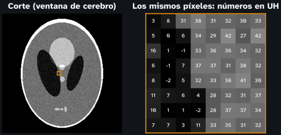
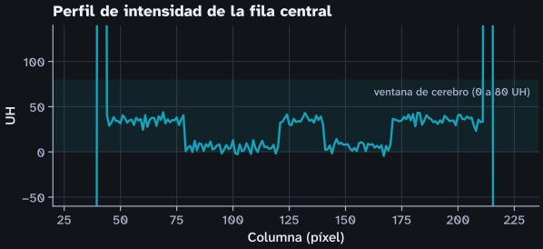

Del píxel a la pregunta causal
Centro de Estudios en Biomédica y Biotecnología
5 de noviembre de 2026

| Tejido | UH aproximadas |
|---|---|
| Aire | −1000 |
| Agua | 0 |
| Cerebro | 30 a 45 |
| Hueso cortical | 700 a más de 1000 |
PixelSpacing del encabezado DICOM, las distancias van en milímetros\[ g = \min\!\Big(1, \max\!\big(0, \tfrac{\text{UH} - (L - W/2)}{W}\big)\Big) \]

La pregunta causal
¿Qué cambiaría en la medida si interviniéramos sobre el paciente, y no sobre el equipo?
XII Seminario de Automática